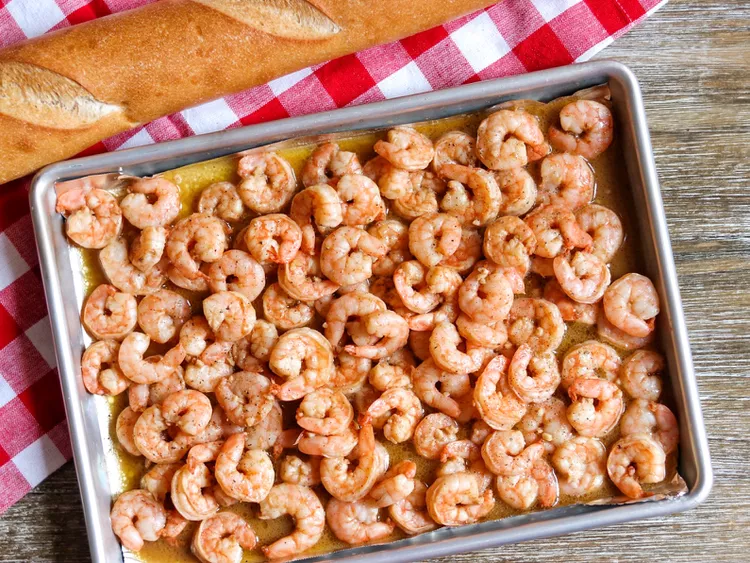

Sheet Pan New Orleans-Style Shrimp

Description
BBQ Shrimp from a restaurant in New Orleans. Don't let the name fool you:
the shrimp isn't grilled with a sweet barbecue sauce; it's simmered in a
butter and Worcestershire sauce.
Ingredients
- ¾ cup unsalted butter, melted
- ¼ cup Worcestershire sauce
- 1 tablespoon freshly squeezed lemon juice
- 1 teaspoon freshly ground black pepper
- 1 teaspoon Cajun seasoning
- ¼ teaspoon hot pepper sauce (such as Tabasco®)
- 2 pounds uncooked large shrimp, peeled and deveined
- 2 cloves garlic, minced
Steps
-
Preheat the oven to 400 degrees F (200 degrees C). Line a sheet pan with
foil.
-
Mix melted butter, Worcestershire sauce, lemon juice, pepper, Cajun
seasoning, and Tabasco sauce together in a small bowl.
-
Rinse shrimp in a colander and pat dry with paper towels to remove the
excess water. Place in a large bowl.
-
Add minced garlic to the bowl with the shrimp. Pour in butter sauce and
toss with the shrimp and garlic. Pour shrimp and sauce onto the prepared
sheet pan, and spread shrimp out into an even layer.
-
Cook in the pre-heated oven until the shrimp turn pink (be careful not
to overcook), about 8 minutes. Serve with the sauce from the pan and
French bread for dipping.
Back to home page